Pasporty slovenských měst: bez pasportu (nahoře, modře) a s pasportem (dole, červeně)
Řez zleva (A) doprava (B), ±10 m podél ulice, 10 px = 1 m. Silné čáry = okraje vozovky, tenké = ostatní hranice, žlutá = střed řezu, * = odhad. Ortofoto © GKÚ Bratislava, NLC (ZBGIS, CC BY 4.0).
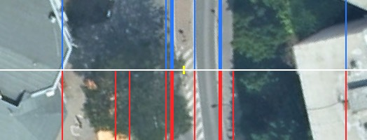
430 · Vladimíra Clementisa ()
bez chodníků OSM: zelen 14.85 · chodnik 0.75* · pruh 3.37* · pruh 3.53* · zelen 18
s chodníky OSM: zelen 7.6 · chodnik 2* · zelen 5.25 · chodnik 0.75* · pruh 3.37* · pruh 3.53* · chodnik 1.95* · zelen 16.05
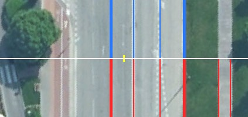
431 · Spartakovská ()
bez chodníků OSM: krajnice 0.17* · pruh 3.7* · pruh 4.5* · pruh 4.13*
s chodníky OSM: krajnice 0.17* · pruh 3.7* · pruh 4.5* · pruh 4.13* · zelen 5.85 · chodnik 2*
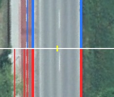
432 · Piešťanská ()
bez chodníků OSM: nezname 1.15* · pruh 9.9*
s chodníky OSM: chodnik 2* · zelen 0.55 · nezname 1.15* · pruh 9.9*
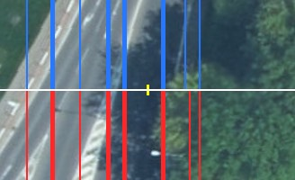
433 · (bez názvu) ()
bez chodníků OSM: nezname 2.76* · pruh 3.1* · pruh 3.1* · delici 1.8* · pruh 4.3* · chodnik 2.5* · nezname 1.65*
s chodníky OSM: nezname 2.75* · pruh 3.1* · pruh 3.1* · delici 1.8* · pruh 4.3* · chodnik 3.05* · nezname 1.1*
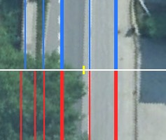
434 · Tamaškovičova ()
bez chodníků OSM: nezname 2.65* · chodnik 2.5* · pruh 4.07* · pruh 3.73*
s chodníky OSM: chodnik 2* · nezname 1.25* · chodnik 2.5* · pruh 4.07* · pruh 3.73*
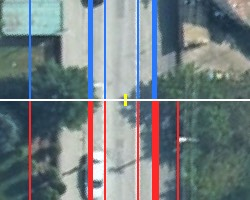
436 · Juraja Fándlyho ()
bez chodníků OSM: chodnik 6* · krajnice 1.47* · pruh 3.3* · cyklopruh 1.63*
s chodníky OSM: chodnik 6* · krajnice 1.47* · pruh 3.3* · cyklopruh 1.63* · nezname 0.35* · chodnik 2*
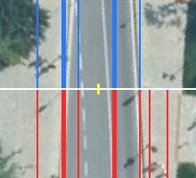
437 · Radlinského ()
bez chodníků OSM: nezname 2.9* · krajnice 1.77* · pruh 3.93* · nezname 2.9*
s chodníky OSM: nezname 2.9* · krajnice 1.77* · pruh 3.93* · nezname 2.9* · zelen 1.1 · chodnik 2*
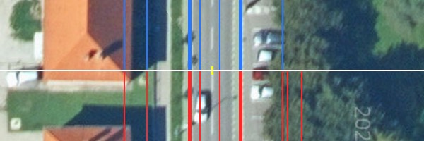
443 · Hodžova ()
bez chodníků OSM: plocha 3.15* · chodnik 6* · cyklopruh 1.5* · pruh 2.85* · pruh 2.85* · chodnik 6* · zelen 24.5
s chodníky OSM: plocha 3.15* · chodnik 6* · cyklopruh 1.5* · pruh 2.85* · pruh 2.85* · chodnik 6* · zelen 0.75* · chodnik 2* · zelen 21.75
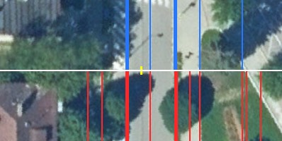
445 · Hodžova ()
bez chodníků OSM: pruh 3.37* · pruh 3.43* · nezname 3.5* · zelen 6.05*
s chodníky OSM: chodnik 2* · nezname 3.45* · pruh 3.37* · pruh 3.53* · chodnik 2* · nezname 1.4* · zelen 6.05* · nezname 0.55* · chodnik 2*
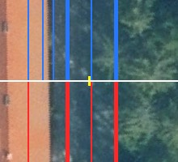
461 · Šoltésovej ()
bez chodníků OSM: chodnik 1.8* · zelen 1.25 · chodnik 1.7* · pruh 2.97* · pruh 3.03*
s chodníky OSM: chodnik 4.75* · pruh 2.97* · pruh 3.03*
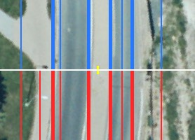
474 · Slovenského odboja ()
bez chodníků OSM: nezname 4.5* · krajnice 1.1* · pruh 4* · delici 3.1* · krajnice 1.67* · krajnice 1.43* · nezname 4.2*
s chodníky OSM: nezname 2.65* · chodnik 1.85* · krajnice 1.1* · pruh 4* · delici 3.1* · krajnice 1.67* · krajnice 1.43* · nezname 4.2*
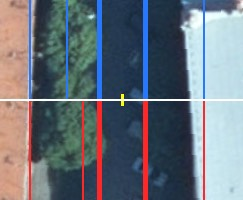
5202 · Farská ()
bez chodníků OSM: chodnik 3.7* · zelen 3.25* · pruh 4.55* · chodnik 5.9*
s chodníky OSM: chodnik 5.35* · zelen 1.6* · pruh 4.55* · chodnik 5.9*
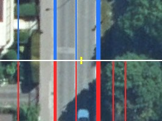
5203 · Janka Kráľa ()
bez chodníků OSM: chodnik 6* · pruh 3.47* · pruh 3.4* · krajnice 0.33*
s chodníky OSM: chodnik 6* · pruh 3.46* · pruh 3.4* · krajnice 0.38* · zelen 2.35 · chodnik 2*
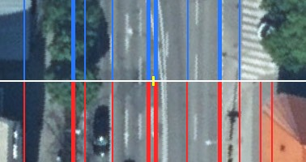
5209 · Štúrova ()
bez chodníků OSM: chodnik 6* · krajnice 1.47* · pruh 3.4* · pruh 4.43* · delici 0.9* · pruh 3.95* · pruh 3.95* · chodnik 2.5*
s chodníky OSM: chodnik 6* · krajnice 1.47* · pruh 3.4* · pruh 4.43* · delici 0.9* · pruh 3.95* · pruh 3.95* · chodnik 2.5* · nezname 2.6* · chodnik 1.45*
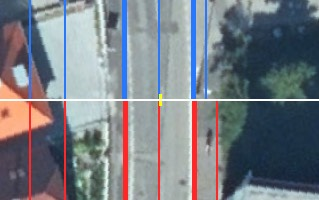
5214 · Janka Kráľa ()
bez chodníků OSM: zelen 3.45* · chodnik 6* · pruh 3.45* · pruh 3.45* · chodnik 1.3*
s chodníky OSM: zelen 3.45* · chodnik 6* · pruh 3.45* · pruh 3.45* · chodnik 2.35*
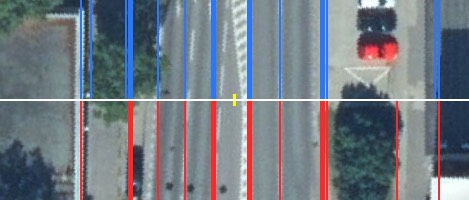
5215 · Štúrova ()
bez chodníků OSM: chodnik 1.05* · zelen 3.5 · chodnik 0.4* · pruh 2.77* · pruh 2.77* · pruh 2.77* · delici 3.6* · pruh 3.07* · pruh 4.23* · chodnik 0.5* · zelen 10.8 · plocha 0.35*
s chodníky OSM: chodnik 4.95* · pruh 2.77* · pruh 2.77* · pruh 2.77* · delici 3.6* · pruh 3.07* · pruh 4.23* · chodnik 0.5* · zelen 6.95 · chodnik 4.2*
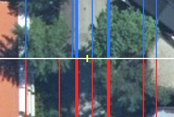
5217 · Jarmočná ()
bez chodníků OSM: zelen 7.95 · chodnik 0.65* · pruh 2.7* · pruh 2.7* · chodnik 6* · zelen 2.2*
s chodníky OSM: zelen 5.75 · chodnik 2.85* · pruh 2.7* · pruh 2.7* · chodnik 6* · zelen 2.2*
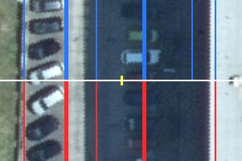
5218 · Damborského ()
bez chodníků OSM: chodnik 5.23* · pruh 3.74* · pruh 5.96* · chodnik 6* · plocha 2.85*
s chodníky OSM: chodnik 5.23* · pruh 3.74* · pruh 5.96* · chodnik 8.85*
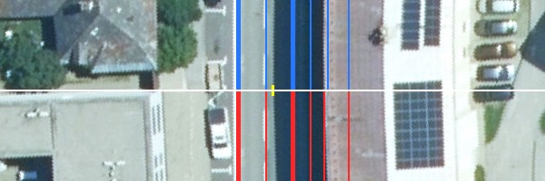
5227 · Sokolská ()
bez chodníků OSM: chodnik 33.45* · pruh_piktokoridor 3.07* · pruh 2.93* · chodnik 2* · zelen 1.9* · chodnik 2.3*
s chodníky OSM: chodnik 33.45* · pruh_piktokoridor 3.07* · pruh 2.93* · chodnik 2* · zelen 1.55* · chodnik 2.65*
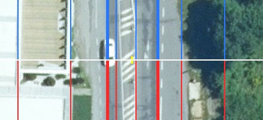
5230 · Strážska cesta ()
bez chodníků OSM: plocha 8.85* · chodnik 6* · krajnice 1.57* · pruh 3.3* · pruh 3.63* · nezname 4* · zelen 7.15
s chodníky OSM: plocha 8.85* · chodnik 6* · krajnice 1.57* · pruh 3.3* · pruh 3.63* · chodnik 4* · zelen 7.15
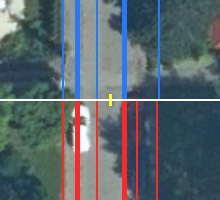
5259 · Tichá ()
bez chodníků OSM: nezname 1.4* · parkovani 2* · pruh 2.7* · nezname 3.55*
s chodníky OSM: nezname 1.4* · parkovani 2* · pruh 2.7* · nezname 1.3* · chodnik 2*
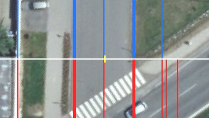
5263 · Bernolákova ()
bez chodníků OSM: chodnik 9.5* · pruh 5* · pruh 5* · zelen 4.8*
s chodníky OSM: chodnik 9.5* · pruh 5* · pruh 5* · zelen 4.8* · nezname 0.7* · chodnik 1.9*
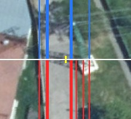
5272 · Športová ()
bez chodníků OSM: chodnik 1.26* · pruh 4* · nezname 3.15*
s chodníky OSM: chodnik 1.26* · pruh 4* · nezname 0.9* · chodnik 1.2* · nezname 1.05*
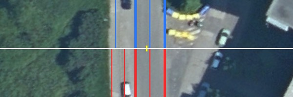
5273 · Michalská ()
bez chodníků OSM: nezname 4* · pruh 3* · pruh 3* · chodnik 32.05*
s chodníky OSM: chodnik 2.65* · nezname 2.15* · pruh 3* · pruh 3* · chodnik 32.05*
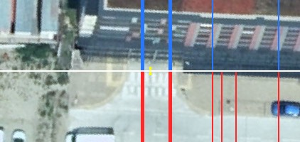
5009 · (bez názvu) ()
bez chodníků OSM: obsluzna 3.9* · chodnik 6* · plocha 9.3*
s chodníky OSM: obsluzna 3.9* · chodnik 6* · plocha 1.35* · chodnik 2* · plocha 5.95*
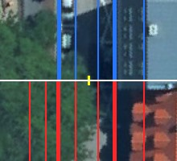
5021 · Palackého ()
bez chodníků OSM: parkovani 2.15* · pruh 2.75* · parkovani 2* · chodnik 3.75*
s chodníky OSM: chodnik 2* · zelen 1.5 · parkovani 2.2* · pruh 2.75* · parkovani 2* · chodnik 3.75*